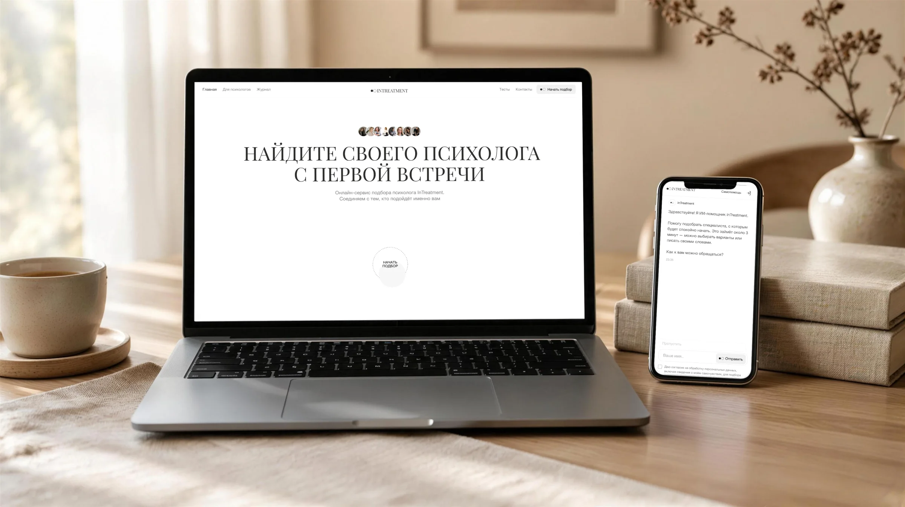
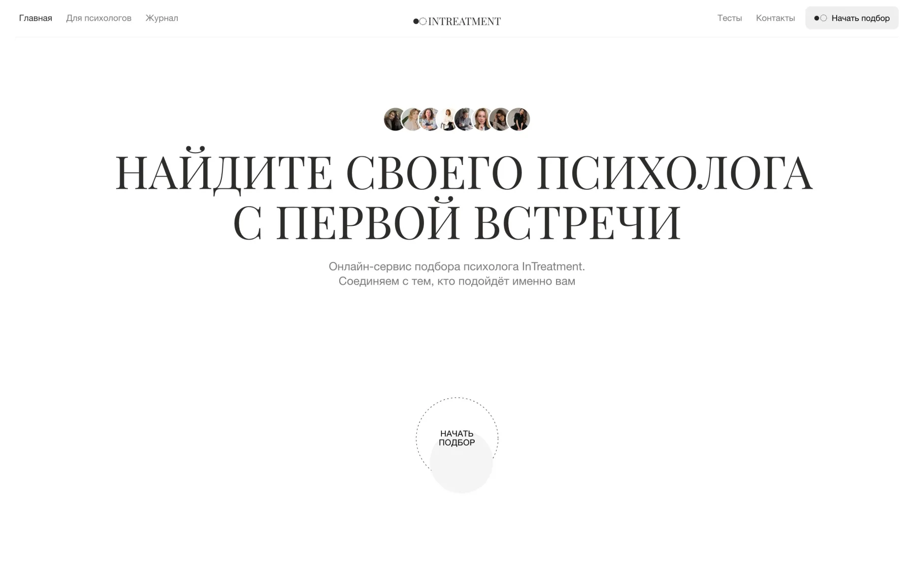
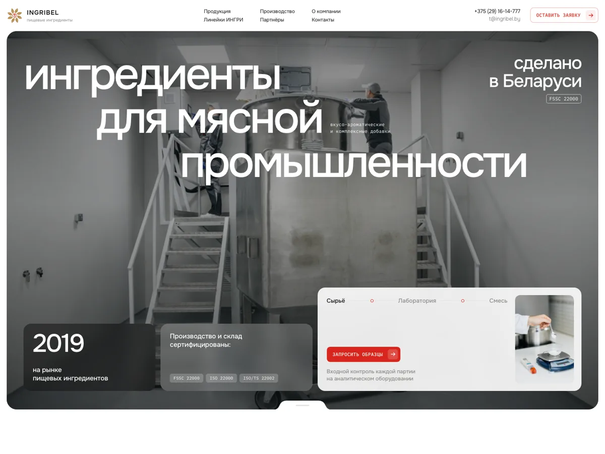
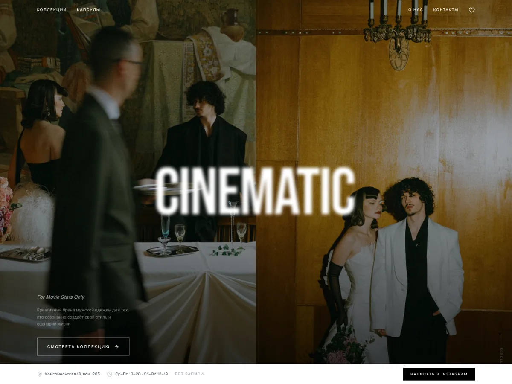
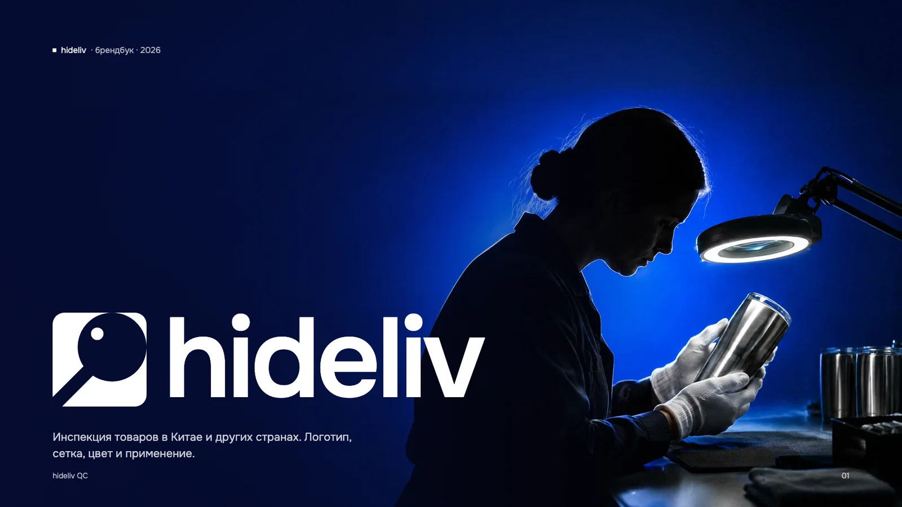
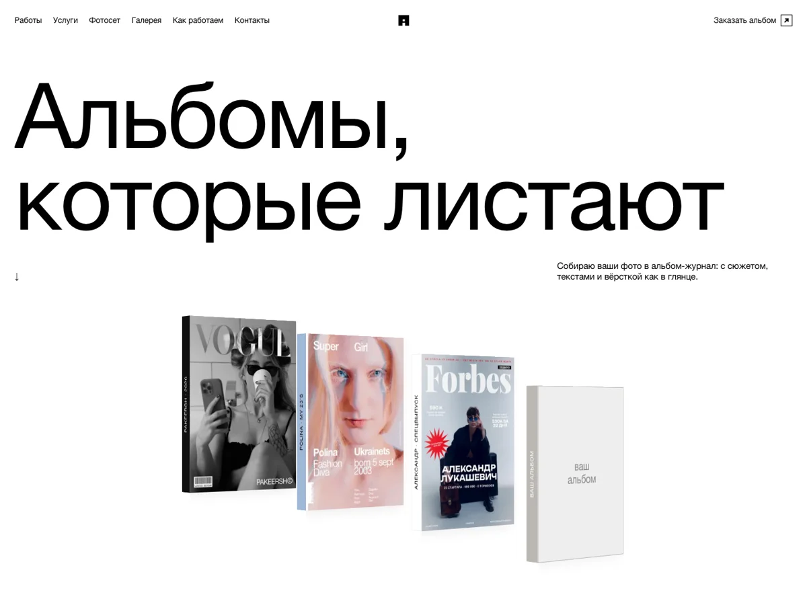
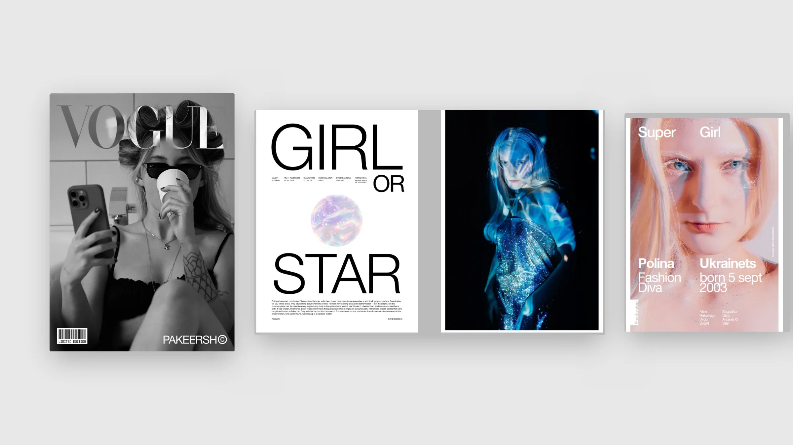

Mary AI
Весь продукт от интерфейса платформы до сайтов, питч-дека для инвесторов, роликов и печати.
Продуктовый дизайнер, который работает вместе с ИИ. Он меня дополняет и ускоряет путь от флоу до живого фронта.
Весь продукт от интерфейса платформы до сайтов, питч-дека для инвесторов, роликов и печати.
Многостраничный сайт, чат-подбор вместо каталога анкет и личные кабинеты клиента, психолога и админа.

 Mary AIПлатформа: чат, автоматизации, дизайн-система
Mary AIПлатформа: чат, автоматизации, дизайн-система
 maryrose.byОсновной сайт Mary AI
maryrose.byОсновной сайт Mary AI
 sales.maryrose.byСайт заказной разработки
sales.maryrose.byСайт заказной разработки

intreatment.onlineМногостраничный сайт платформы
INGRIBEL ↗︎Сайт производителя пищевых ингредиентов Creative Bus ↗︎Лендинг рекламы на транспорте с прайсом и калькулятором
Creative Bus ↗︎Лендинг рекламы на транспорте с прайсом и калькулятором

CINEMATIC ↗︎Интернет-магазин бренда мужской одежды · в разработке
hideliv QCАйдентика и лендинг сервиса инспекции товаров в Китае
albumchik.by ↗︎Сайт моего проекта журналов
ALBUMCHIKЖурналы о человеке и фотоальбомы Mary · печатьБейджи, брошюра-гармошка, визитки
Mary · печатьБейджи, брошюра-гармошка, визитки
Моё преимущество
ИИ меня дополняет, а не заменяет: берёт рутину, а решения и вкус остаются за мной. Поэтому недели работы превращаются в дни.
Концепт за день, правки за пару часов.
Проверяю варианты на людях, а не на картинках.
Живой сайт, разработка не верстает с нуля.
Сначала продукт и система, потом код.
Веду продукт от задачи и пути клиента до готового фронта, который забирает разработка, и везде использую ИИ, чтобы это шло быстрее. А всё, что продукт показывает людям снаружи (сайт, презентация, ролик, печать), делаю в той же системе, поэтому всё выглядит как одно целое.
Разбираю задачу и путь клиента, рисую флоу и нахожу, где люди теряются. Проектирую интерфейсы, собираю дизайн-систему и рабочий прототип, который по сути готовый фронт. На нём же быстро собираются варианты для A/B-тестов.
Mary · платформа →InTreatment · чат-подбор →InTreatment · кабинеты →Структура, тексты вместе с заказчиком, дизайн, анимации и мобильная версия. SEO и аналитику закладываю сразу. Могу сама сверстать и выложить.
maryrose.by →sales.maryrose.by →intreatment.online →albumchik.by →Собираю историю и цифры в презентацию для инвесторов или клиентов. Делаю PDF, PPTX и веб-версию, могу оживить слайды моушеном.
Mary · питч-дек на $3M →Промо-ролики продукта, моушен интерфейсов и слайдов, видео-мокапы устройств, заставки и оформление YouTube-канала.
Mary · ролики и мокапы →Логотип и фирменный стиль, бейджи, визитки, мерч. Всё сразу проверяю на настоящих носителях и мокапах.
Mary · бейджи и брошюры →ALBUMCHIK →Посты и карусели, сторис, баннеры, шапки каналов и обложки к видео. В одном стиле с продуктом, чтобы соцсети не жили отдельно от сайта.
Mary · контент →Журналы и фотоальбомы, брошюры и буклеты. Отбор кадров, сетка, типографика и подготовка к печати.
ALBUMCHIK · журналы →Mary · брошюра →